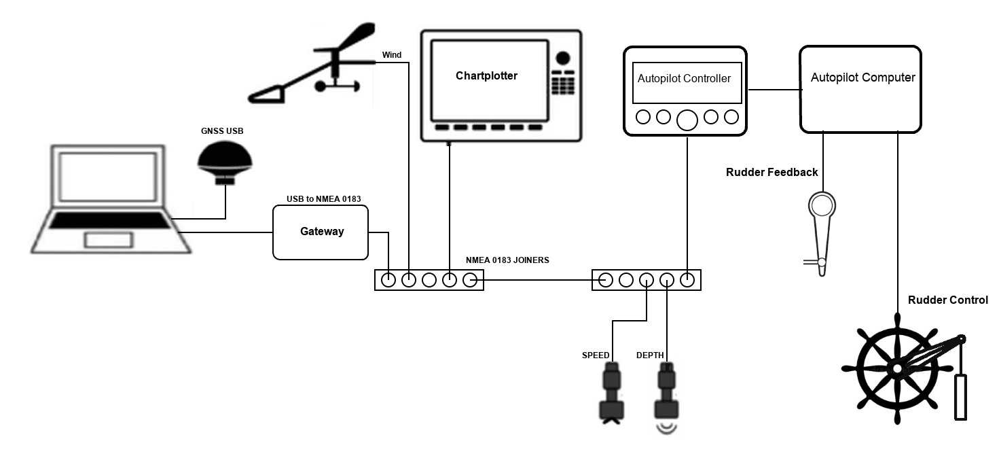
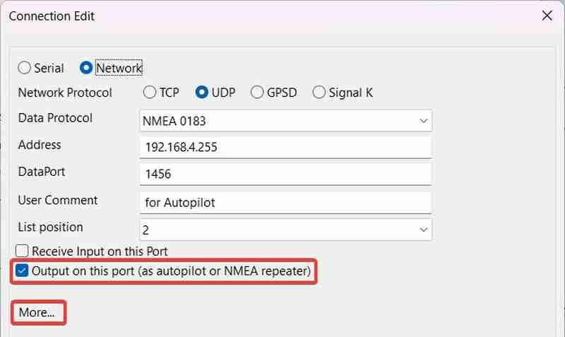
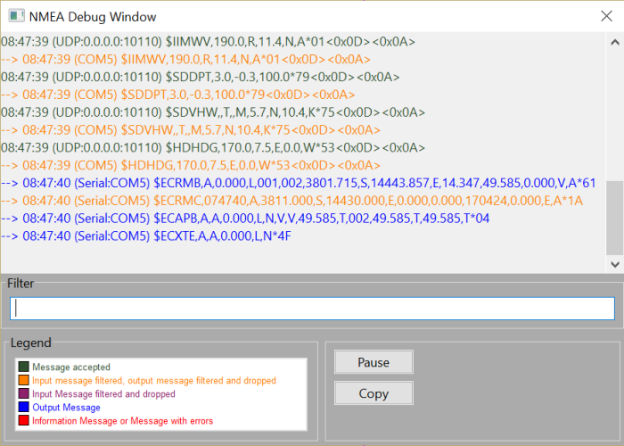
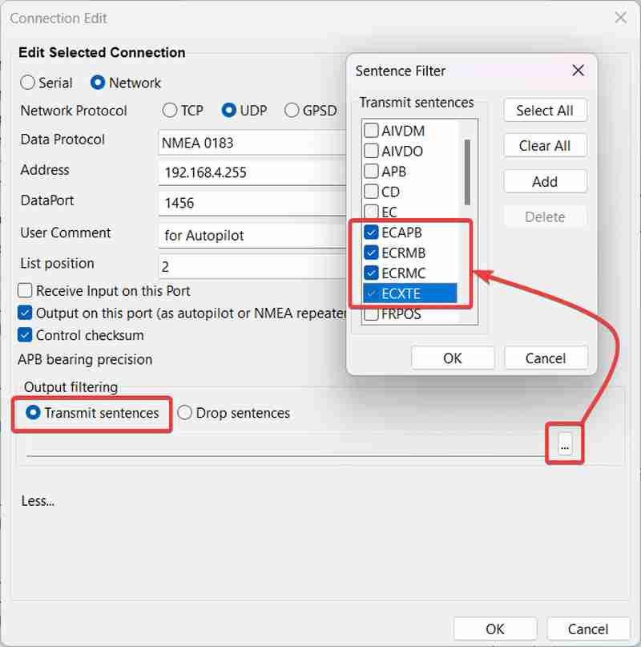
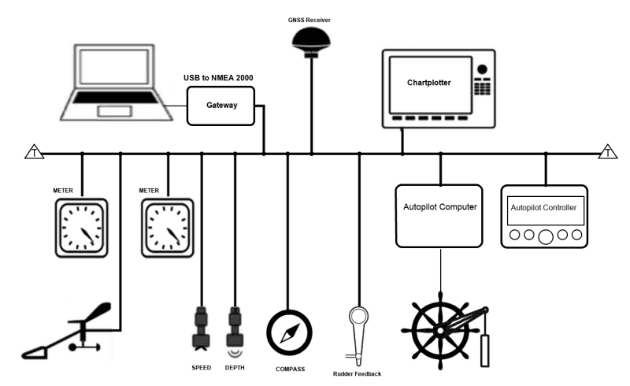
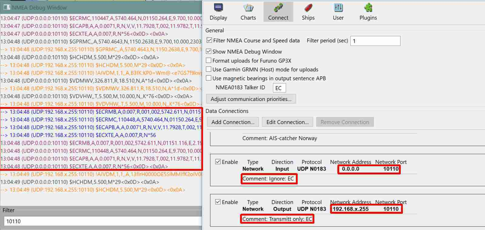
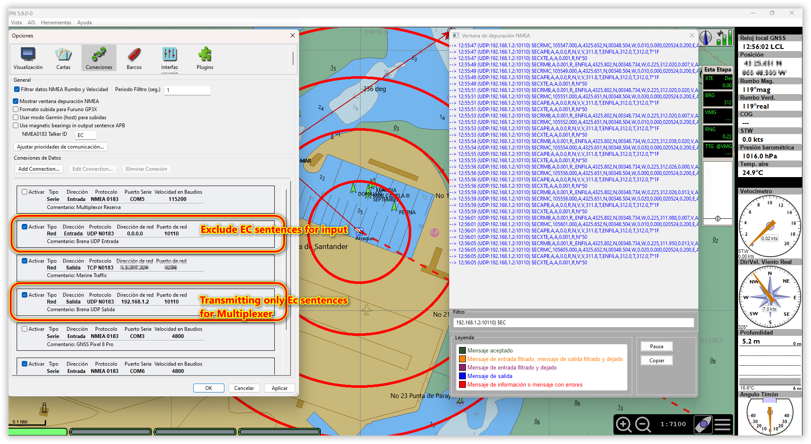

Autopilots
OpenCPN is capable of integrating with autopilots, however there are a few limitations to be aware of.
Terminology
-
Engaging the autopilot. This means to turn on the autopilot, change the mode from Standby to Heading (follow a compass bearing), Wind (steer to a wind angle) or Navigation (steer towards a waypoint).
-
Controlling the autopilot. When the autopilot is in Navigation mode, this means sending navigation data to the autopilot to ensure it stays on course.
-
NMEA 0183, a simple ASCII text protocol transmitted using serial communications on RS232/RS422 connections. Used on older marine equipment.
-
NMEA 2000, a binary protocol transmitted over a CAN Bus. Supercedes NMEA 0183 and is used today in most modern marine equipment (Raymarine Seatalkng and Simrad Simnet are also NMEA 2000 albeit with proprietary connectors).
-
Seatalk, a proprietary Raymarine system using a binary protocol transmitted over a serial connection (Do not confuse Seatalkng or SeatalkHS with Seatalk, aka Seatalk1)
NMEA 0183 Autopilots
OpenCPN does not engage NMEA 0183 autopilots. You will still need to use your autopilot’s controller to switch the autopilot mode from standby to another mode. However, OpenCPN can control the autopilot when engaged in Navigation mode.
-
Physically connect your autopilot to OpenCPN.
-
Configure an outbound connection. Most NMEA 0183 autopilots use the NMEA 0183 sentences APB, RMB, RMC and XTE in order to steer towards a waypoint, so it is best practice to filter to send these outbound sentences. See below how to arrange the filter.
-
Once underway, activate a route or waypoint in OpenCPN and manually engage your autopilot. OpenCPN will then calculate the cross track error and bearing and generate the APB, RMB, RMC and XTE sentences that are transmitted to the autopilot.
An NMEA 0183-based autopilot:

Configuring an outbound, NMEA 0183 serial connection for an autopilot. Click More, then three-dot icon to add filters.

You can confirm that OpenCPN is transmitting navigation data to the autopilot via the NMEA Debug Window. Upon activation of a route or waypoint you should observe APB, RMB, RMC and XTE sentences in the debug window. They are colored blue to indicate they are outbound sentences.

It is recommended that you also enable an output filter to only send autopilot-related sentences and to not overflow the OpenCPN serial port or autopilot with unused sentences. When you activate a route, OpenCPN will produce NMEA 0183 sentences for that route: $ECAPB, $ECRMB, $ECRMC and $ECXTE. A recommended filter would be to only output ECAPB, ECRMB, ECRMC and ECXTE sentences. You may need to read your autopilot manual to find out what’s needed and adapt the filter accordingly. If you need also "RMC", but remember to use "ECRMC" in the OpenCPN output filter. (The "RMC" from the GNSS receiver is not what you want.)

Seatalk Autopilots
OpenCPN does not have any native way of supporting Seatalk autopilots. You will need to use a gateway to integrate OpenCPN with a Seatalk autopilot. In this case, the gateway will convert NMEA 0183 APB, RMB and XTE sentences generated by OpenCPN into their Seatalk counterparts in order to send navigation information to the autopilot.
NMEA 2000 Autopilots
Although OpenCPN does not have a native way to integrate with NMEA 2000 autopilots, there are two methods that can be used. NMEA 2000 autopilots use proprietary NMEA 2000 messages to engage the autopilot but they do use standard messages to steer towards a waypoint. These necessary Parameter Group Numbers (PGN’s) are 129283 (Cross Track Error) and 129284 (Navigation Information). The two methods are:
-
Use a gateway to connect OpenCPN to a NMEA 2000 autopilot. The gateway will convert the NMEA 0183 APB, RMB and XTE sentences generated by OpenCPN into PGN’s 129283 and 129284 and transmit these to the autopilot. This requires that the autopilot not be connected to the vessel’s NMEA 0183 network.
-
Use an OpenCPN plugin. The Autotrack Raymarine plugin allows you to both engage and control a Raymarine EV-1 autopilot. The plugin sends the proprietary PGN’s to engage the autopilot and using navigation data from OpenCPN to adjust the course of the EV-1.
For an autopilot on the NMEA 2000 bus:

Sending an Active Route to an Autopilot
Activate the Route and refer to Sending an Active Route to an autopilotfor details about configuring an active route.
Upon Activating a Route, Navigating to a waypoint (right-click command), or simply Navigate to here (right-click command), OpenCPN sends the ECAPB, ECRMB, ECRMC and ECXTE NMEA sentences to the connected autopilot.
The basic NMEA 0183 sentences that most autopilots require from a chartplotter are XTE and either APB or RMB (or both).
Waypoint Arrival Circle Radius
See checkbox for Advance route waypoint on arrival
Autopilot Configuration with 2 UDP Connections
Example 1
-
Network UDP NMEA 0183 Receive Input on this port with a default IP address 0.0.0.0 or localhost or 127.0.0.1, Port:10101 filtered to reject EC.
-
Network UDP NMEA 0183 Output use multicast or specific address. Examples: 192.168.1.255 or 192.168.x.255, Port:10101 Filtered to transmit EC
-
Reminder: When using the same port in and out you must use filter on both to avoid a feedback loop that will "choke" the system.
-
Each filter is noted in the comment:

Example 2
-
Network NMEA 0183 UDP Receive Input data from multiplexer with IP address 0.0.0.0 and port 10110, filtered to reject input EC sentences.
-
Network NMEA 0183 UDP output data to multiplexer with its IP address 192.168.1.2 and port 10110, filtered to send only EC sentences. Note that IP Address 192.168.1.2 works to a specific receiver "one to one". Using 192.168.1.255 sends to all devices on the 192.168.1 network segment who are listening to "localhost" (or 127.0.0.1).
-
These sentences are translated in the multiplexer to SeaTalk for autopilot.
-
Activated one route and opened the NMEA debug window.
-
The autopilot in Track mode points to the waypoint.
(
Thinking about OpenCPN and Autopilots
-
To send or receive any data, OpenCPN has to be connected to a USB hub, joiner, gateway or multiplexer that is connected to a NMEA 0183 network or NMEA 2000 network, or some proprietary network via a converter.
-
To receive data there needs to be some form of "receive input" connection (from Instruments - Wind direction and speed, Depth and Speed Thru the Water).
-
Normally there needs to be a compass instrument connected to the network to provide this information to the autopilot.
-
To send data from OpenCPN there needs to be some form of "output" connection to USB hub, joiner, gateway or multiplexer (that is received by the autopilot).
-
For the autopilot to receive data, it needs to be connected to the USB hub, joiner, gateway or multiplexer via NMEA 0183 network or NMEA 2000 network, or some proprietary network via a converter.
-
For NMEA 0183 autopilots to work, the OpenCPN output connection needs to send the sentences required by the particular autopilot, which is often ECAPB, ECRMB and ECXTE.
-
For NMEA 2000 autopilots to work, a NMEA 2000 PGN has to be sent out from OpenCPN which may be proprietary to the manufacturer of the autopilot, although there are generic autopilot PGN. Therefore, OpenCPN uses specific autopilot plugins for each manufacturer. The plugin will likely require entry of an IP Address to connect to the autopilot.